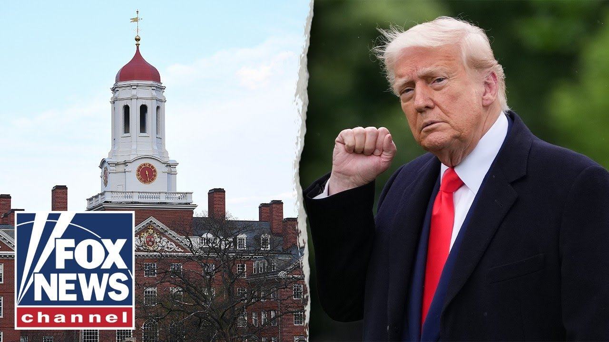

【哈佛成为焦点：律师称特朗普“做得对”】
Summary: Harvard faces scrutiny as Trump confronts the Ivy League over alleged obstruction of federal investigations and protection of foreign students involved in anti-American protests, with legal experts predicting the administration's victory in court.
摘要： 哈佛因涉嫌阻挠联邦调查和保护参与反美抗议的外国学生而受到审查，特朗普政府与这所常春藤盟校对峙，法律专家预测政府将在法庭上获胜。

⏱️ Estimated Reading Time: 11 min
Meanwhile, Harvard's on the hot seat, and President Trump is not backing down.
与此同时，哈佛成为焦点，特朗普总统并未退缩。
The president going head-to-head with the Ivy League powerhouse, accusing Harvard of stonewalling federal investigators and shielding foreign students tied to anti-American protests.
总统与这所常春藤盟校正面交锋，指控哈佛阻挠联邦调查并保护参与反美抗议的外国学生。
State Department spokesperson Tammy Bruce says it's an issue bigger than Harvard.
国务院发言人塔米·布鲁斯表示，这个问题比哈佛更严重。
Harvard's in the news.
哈佛成为新闻焦点。
It's a big story.
这是一个大新闻。
It's perhaps an easy story to cover.
这或许是一个容易报道的新闻。
Uh but it's not just Harvard.
但这不仅仅是哈佛的问题。
it is uh the nature of our ability to again know who's coming in and perhaps you know when it comes to to vetting uh there are many tools in our tool chest.
这关系到我们能否再次了解谁在进入美国，以及在审查方面，我们有许多工具可用。
Uh we do know that um uh it's worth checking visas as visas expire.
我们知道检查签证是否过期是值得的。
We've we've seen historically people don't necessarily leave when their visas expire.
历史上我们看到，签证过期的人不一定会离开。
Let's bring in attorney Seth Baronwag.
让我们请来律师塞斯·巴伦瓦格。
Seth, you are a constitutional lawyer.
塞斯，你是一名宪法律师。
Harvard says the president is exceeding his authority in what he is demanding of that institution.
哈佛表示，总统对该机构的要求超出了他的权限。
What do you say?
你怎么看？
Well, I think Harvard ultimately is going to lose this case.
我认为哈佛最终会输掉这场官司。
Harvard University is at the center of the Trump administration's attempt to refine and protect American values and also slots for uh young American students to actually attend these supposedly elite universities.
哈佛大学是特朗普政府试图完善和保护美国价值观以及为美国年轻学生争取这些所谓精英大学名额的核心。
Keep in mind that a lot of these foreign students that come in uh in a program administered by DHS led by Christy Gnome um have had these kinds of anti-West, anti-American, anti-Israel protests.
请记住，许多通过国土安全部管理的项目入境的这些外国学生，由克里斯蒂·诺姆领导，参与了反西方、反美、反以色列的抗议活动。
These are students that are coming in um that are taking slots away from American students.
这些学生占用了本应属于美国学生的名额。
What the administration has been doing under full legal authority and through DHS in this instance is to tell schools like Harvard University that we are not going to allow and will in fact descertify your foreign student programs.
政府在此事上通过国土安全部行使完全的法律权力，告诉哈佛大学等学校，我们不会允许并将取消你们的外国学生项目资格。
And now um there was a judge late this week that gave a temporary reprieve to Harvard University and ruling that u an injunction should issue against the Trump administration.
本周晚些时候，一名法官暂时中止了对哈佛大学的处罚，并裁定应对特朗普政府发布禁令。
And ultimately I think that the administration will win.
最终我认为政府会获胜。
Harvard will lose.
哈佛会输。
The administration is doing the right thing.
政府做得对。
They are acting fully authorized by law.
他们的行为完全合法。
Uh DHS administers this program.
国土安全部管理这一项目。
The state department also is in charge of visas.
国务院也负责签证事务。
And when an Obama uh appointed judge such as this one this week in Massachusetts tries to overturn the apple cart, ultimately it's going to fail.
当像本周马萨诸塞州这样由奥巴马任命的法官试图推翻这一决定时，最终会失败。
Doug Shonne is well known to viewers on Fox, also a well-known Democratic operative.
道格·肖恩是福克斯观众熟知的人物，也是一位知名的民主党活动人士。
He says it never should have reached this point.
他说事情本不该发展到这一步。
Here's what he wrote on Fox News Digital.
以下是他在福克斯新闻数字版上写的内容。
He says, "Of course, it should not take the president of the United States to bring American universities in line with their own codes of conduct.
他说：“当然，不应该需要美国总统来让美国大学遵守自己的行为准则。”
Nor should it take the power of the White House to force Harvard to crack down on the scourge of anti-semitism and anti-American extremism that has overrun its campus."
也不应该需要白宫的力量来迫使哈佛打击校园中泛滥的反犹太主义和反美极端主义。”
And yet, this is where we now find ourselves.
然而，这就是我们现在所处的情况。
It is my hope as an alum and as an American that the Trump administration and Harvard come to a solution whereby the university realizes it cannot continue to permit or reward students who so blatantly violate the code of conduct either of the university or of the United States.
作为一名校友和美国人，我希望特朗普政府和哈佛能够达成解决方案，让大学意识到不能再继续允许或奖励那些公然违反大学或美国行为准则的学生。
So that is Doug's wish.
这就是道格的愿望。
He wants, you know, the two sides to come together and reach an agreement.
他希望双方能够达成协议。
But what do you think?
但你怎么看？
It doesn't seem like Harvard really is inclined to budge here.
哈佛似乎并不愿意让步。
Well, quite the opposite.
恰恰相反。
And by the way, I agree with um that uh statement completely.
顺便说一句，我完全同意这一说法。
Harvard has been absolutely opposing this.
哈佛一直在坚决反对这一点。
They've made that clear in their speeches.
他们在演讲中明确表达了这一点。
And think about this.
想想这一点。
Um the administration is trying to revoke the taxexempt status of Harvard University.
政府正试图取消哈佛大学的免税地位。
They have $53 billion in their endowment fund.
他们有530亿美元的捐赠基金。
They're acting like like like a VC firm.
他们表现得像一家风投公司。
They would ordinarily have to pay those tax dollars, but the only reason they're getting a free ride is because they supposedly support American values.
他们通常需要缴纳这些税款，但他们能够免税的唯一原因是他们声称支持美国价值观。
We know that's not the case.
我们知道事实并非如此。
If these institutions want to live in a clueless IV tower and they want to live there tax-free, America should not have to pay that rent.
如果这些机构想生活在与世隔绝的象牙塔中并享受免税待遇，美国不应该为此买单。
So, I agree with that sentiment and I think that the administration ultimately either in the district court or in the appellet court is definitely going to win this case.
因此，我同意这一观点，并认为政府最终无论是在地方法院还是上诉法院都一定会赢得这场官司。
There's really no role for federal judges to even come in and overturn this.
联邦法官甚至没有理由介入并推翻这一决定。
And while there are short-term setbacks that the administration has faced lately, as we've seen in other litigation instances, ultimately they come out on top.
尽管政府最近面临一些短期挫折，但正如我们在其他诉讼案例中看到的，他们最终会胜出。
So the administration is right on this.
因此，政府在这件事上是正确的。
They're right on the policy.
他们的政策是正确的。
They're right on the law.
他们的法律依据是正确的。
And when you look at these disgusting commencement speeches, you can see that President Trump is doing the right thing.
当你看到这些令人作呕的毕业演讲时，你会明白特朗普总统做得对。
Okay.
好吧。
But again, you're a constitutional attorney and people can get up at a microphone at commencement and say whatever they want, can't they?
但再次强调，你是一名宪法律师，人们在毕业典礼上可以对着麦克风说任何他们想说的话，不是吗？
Well, there there are uh reasonable uh time, place, and manner regulations and restrictions on freedom of speech.
自由言论有合理的时间、地点和方式限制。
And even MIT uh which can be with all due respect a pretty woke institution even recognize that as a result of this disgraceful commencement speech.
即使是麻省理工学院——恕我直言，一个相当“觉醒”的机构——也因这次可耻的毕业演讲而认识到这一点。
So um there are time, place, and manner regulations that can apply to freedom of speech.
因此，自由言论可以受到时间、地点和方式的限制。
Also, as we've seen in other Ivy League campuses, such as in New York with Columbia University, Mahmood Khalil um supposedly had freedom of speech, but he went in and engaged in violent activity and after some initial setbacks.
此外，正如我们在其他常春藤盟校看到的，比如纽约的哥伦比亚大学，马哈茂德·哈利勒本应享有言论自由，但他参与了暴力活动，并在经历一些初期挫折后。
Once again, the Trump administration won and ultimately now it looks like he's going to be deported as well.
特朗普政府再次获胜，现在看起来他也将被驱逐出境。
So, he came in trying to fly a First Amendment banner.
因此，他试图打着第一修正案的旗号。
It didn't work for him.
这对他没有用。
It's not going to work for the schools.
这对学校也不会奏效。
look for these litigation trends to continue in the administration's favor over the next couple of months.
预计未来几个月这些诉讼趋势将继续对政府有利。
How much of this anti-Israel and maybe anti-American uh sentiment is being fueled or maybe funded by, you know, enemy nation states?
这种反以色列甚至反美的情绪有多少是由敌对国家煽动或资助的？
Oh, there's no question about that.
哦，这一点毫无疑问。
I mean, you know, t take a look for example at Qatar.
比如看看卡塔尔。
Qatar has been sending billions of dollars to universities in the United States for over 10 years.
卡塔尔十多年来一直向美国大学输送数十亿美元。
And in fact, it's recently been uncovered that Qatar even sends money uh to uh K through2 programs.
事实上，最近发现卡塔尔甚至向K-12项目提供资金。
You look at a lot of these universities that that that have these uh uh educational programs that have been instituted.
你看看许多大学设立的这些教育项目。
There's a lot of foreign money that's going into these institutions.
这些机构中有大量外国资金流入。
That's something that needs to be reviewed as well.
这也需要审查。
Some of these uh uh student organizations have been uh dis exposed as fronts.
一些学生组织被揭露为幌子。
uh and students like this MIT student and and more centrally Makmoud Khalil have actually been actively supporting foreign terrorist organizations which is one of the reasons why the Trump administration has been winning in the courts.
像这位麻省理工学院学生以及更核心的马哈茂德·哈利勒这样的学生实际上一直在积极支持外国恐怖组织，这也是特朗普政府在法庭上获胜的原因之一。
So you've identified a very important factor that goes into the whole flow of events and again supports the reason why the administration needs to continue to fight to protect American values, taxpayer funds, and to allow young American students to be able to get these slots in these competitive universities.
因此，你指出了一个非常重要的事件因素，再次支持了政府需要继续斗争以保护美国价值观、纳税人资金，并让美国年轻学生能够进入这些竞争激烈的大学的原因。
Seth Baronwag, constitutional attorney, thanks for coming on.
宪法律师塞斯·巴伦瓦格，感谢你的到来。
Hey, Sean Hannity here.
嘿，我是肖恩·汉尼提。
Hey, click here to subscribe to Fox News YouTube page and catch our hottest interviews and most compelling analysis.
点击这里订阅福克斯新闻YouTube频道，观看我们最热门的访谈和最引人入胜的分析。
You will not get it anywhere else.
你在其他地方看不到这些内容。